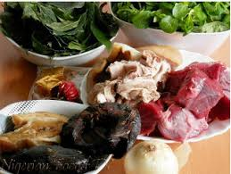

Afang leaf botanically known as Gnetum Africanum is a climbing leafy vegetable that belongs to the family of Gnetaceae commonly grown in West Africa, majorly in the southern and eastern parts of Nigeria.
This greenish climbing plant is also prevalent in other tropical regions like Congo, Gabon, Angola, Asia and South America. In Eastern parts of Nigeria it is called Ukazi while the Southerners refer to it as Afang leave, it is used to make the popular cerimonial food "Afang soup" served at weedings and other functions. It is majorly a party food.

Now that we have all our ingredients ready, let us move rignt into the food preparation
You can enjoy your afang soup with fufu, made from fermented cassava starch
There you have it, tasty and delicious Afang Soup!
If you are staying in Lagos, some of the ingredients listed above can be purchased here